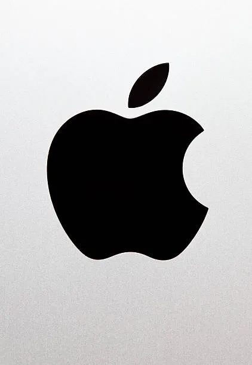

<!-- Example 6: Submit Event -->

<!-- This example uses an event listener to prevent the default form submission behavior and display a message instead. -->


<form id="myForm">
  <input type="text" name="name">
  <button type="submit">Submit</button>
</form>
function changetheme(){
  document.documentElement.classList.toggle("dark-theme");
  localStorage.setItem(theme, "dark-theme");


  let retrieve_data = localStorage.getItem('theme')
  if (retrieve_data == "dark-theme") {
      localStorage.setItem("dark-theme");
  } else {
      localStorage.setItem("light-theme");
  }
<script>
const form = document.getElementById('myForm');

form.addEventListener('submit', function(event) {
  event.preventDefault();
  alert('Form submitted (but not actually sent)');
});
</script>


<!-- Example 7: Keydown Event -->

<!-- This example uses an event listener to display the pressed key in the console when a key is pressed down on the document. -->


<script>
document.addEventListener('keydown', function(event) {
  console.log('You pressed:', event.key);
});
</script>


<!-- Example 8: Focus Event -->

<!-- This example uses an event listener to add a border to an input field when it receives focus. -->


<input type="text" id="myInput">

<script>
const input = document.getElementById('myInput');

input.addEventListener('focus', function() {
  input.style.border = '2px solid blue';
});
</script>


<!-- Example 10: Image Load Event -->

<!-- This example uses an event listener to display a message in the console when an image finishes loading. -->




<script>
const image = document.getElementById('myImage');

image.addEventListener('load', function() {
  console.log('Image loaded!');
});
</script>


